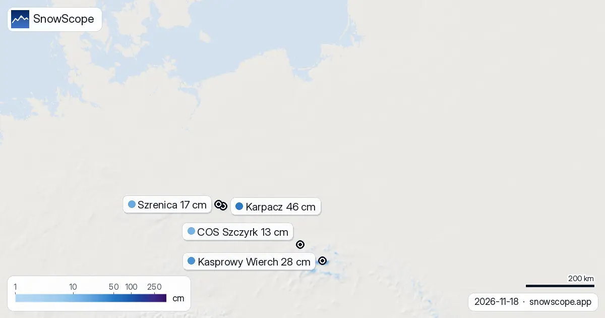

26 of 114 resorts in Poland have snow on top: the list
On Wednesday 18 November, snow covered just 5 percent of Poland's high ground. Only 26 of 114 resorts had any snow on their upper slopes, with Karpacz holding the most at 46 cm.
See the live snow forecast for Karpacz in the SnowScope appSnow depth, powder alerts and the 3D map, free.
The snow is retreating
A sharp melt has shrunk the white area across Poland. In one day alone, 580 km² of snow vanished. Last week this date showed 1,120 km² of snow cover; today only 590 km² remained.
The snow line had climbed to around 1,200 m. Below that height, the mountains were mostly bare or patchy. Only above 1,500 m did the ground stay reliably white.
| Resort | Snow depth | New snow, 72 h | Coming, next days | Top |
|---|---|---|---|---|
| Karpacz | 46 cm | 7 cm | 12 cm | 1,350 m |
| Kasprowy Wierch | 28 cm | 13 cm | 16 cm | 1,958 m |
| Szrenica | 17 cm | 6 cm | 10 cm | 1,306 m |
| COS Szczyrk | 13 cm | 2 cm | 4 cm | 1,244 m |
| Dwie Doliny Muszyna-Wierchomla | 12 cm | 0 cm | 1 cm | 987 m |

Five resorts with skiable bases
Karpacz sits at the top with 46 cm on its upper slopes at 1,350 m. It had caught 7 cm of fresh snow in the past three days and had 12 cm more forecast by Saturday 21 November.
Kasprowy Wierch, the highest resort at 1,958 m, held 28 cm and had seen 13 cm fall in three days, with 16 cm expected by Saturday. Szrenica had 17 cm (6 cm fresh, 10 cm coming). COS Szczyrk showed 13 cm (2 cm fresh, 4 cm forecast). Dwie Doliny Muszyna-Wierchomla trailed with 12 cm (no fresh snow, just 1 cm expected).
These five were the only resorts with more than 10 cm of snow. The rest of the 26 with any white cover had thin bases likely unsuitable for skiing.

Height decides who skis
The mountains fell into three clear zones. Between 500 m and 1,000 m, almost nothing remained: less than 1 cm on average, only 2 percent covered. Between 1,000 m and 1,500 m, patchy snow lay at an average 2 cm, covering 37 percent of the ground.
Above 1,500 m the picture changed entirely. Snow lay 19 cm deep on average and covered the whole slope (100 percent). If you could reach those higher runs, you had a continuous base to work with.
Where the new snow fell
Three days of snowfall (16 to 18 November) had favoured the mountains. The Tatras received the most: 16 cm in three days. The Karkonosze and Beskids each got 7 cm. Only 150 km² of the whole country had received at least 5 cm.
The highest peaks had benefited most. Lower foothills saw barely a dusting.
What the next week holds
Thursday 19 November stood out in the forecast with up to 5 cm in a single day. Over the three days to Saturday 21 November, up to 10 cm was expected. By the end of the week, up to 13 cm looked possible.
Beyond that short term, days 8 to 14 (26 November to 2 December) showed potential for up to 22 cm on the snowiest slopes. If that forecast held, more skiers would find bases worth riding.
How this compares with the neighbours
Slovakia was slightly better off at the same moment: 10 percent white cover with Ski centrum Dedinky at 42 cm (compared to Poland's Karpacz at 46 cm). Slovakia expected up to 15 cm in the week ahead.
Czechia had almost no snow: 0 percent white, with Figura Praděd at just 15 cm. The Czech forecast showed only 10 cm possible over seven days. Poland's deeper resorts and larger snow cover made it the stronger choice for the region.
Tips for skiers
- Target Karpacz or Kasprowy Wierch if you go before Thursday 19 November: they have the best current bases and sit high enough to hold snow longer.
- Wait until after Thursday if possible. Fresh snow takes time to settle and bond; Thursday's fall will be skiable by Friday or Saturday.
- Stay above 1,500 m whenever you can. Below that, expect thin cover, exposed grass, and stones between patches.
- Morning snow after a clear night sets hard on north faces and upper slopes; south faces and lower elevations will be soft by mid-morning.
- Check the official avalanche bulletin before any off-piste runs. Fresh snow on cold ground can slide suddenly.
About these numbers
Resort snow depths are the deepest snow on the resort's upper slopes on the date shown; they are estimates for an area, not a measurement at one point. Forecasts can change. Always read the official avalanche bulletin before going off-piste.
Cite this report
For research, teaching or the press: the numbers and charts are free to reuse under CC BY 4.0 with this citation.
SnowScope (2026), 26 of 114 resorts in Poland have snow on top: the list, https://snowscope.app/blog/en/2026/11/poland-resorts-with-snow-18-november-2026.html, accessed 2026-11-18
SnowScope (Atlas Labs). (2026, November 18). 26 of 114 resorts in Poland have snow on top: the list. SnowScope snow reports. https://snowscope.app/blog/en/2026/11/poland-resorts-with-snow-18-november-2026.html
BibTeX
@misc{snowscope2026polandresortswithsnow18n,
author = {{SnowScope (Atlas Labs)}},
title = {26 of 114 resorts in Poland have snow on top: the list},
year = {2026},
month = nov,
howpublished = {\url{https://snowscope.app/blog/en/2026/11/poland-resorts-with-snow-18-november-2026.html}},
note = {Published 2026-11-18 11:33 UTC; accessed 2026-11-18}
}· CC BY 4.0 · Methods, data and tools →
Karpacz: snow and temperature by height, this winter vs last (tools) →
Follow Karpacz
Free: a message when fresh snow is coming, and the forecast every morning.
More snow reports

From 13 to 19 November 2026 Slovenia got the most snow and kept it; Serbia and Croatia had a deep but short white weekend; Montenegro only on Durmitor; Bulgaria almost none. The ranking, with links to each country report.

Snow is falling on Slovenia's ski mountains today: about 37 cm on Kanin and 21 cm on Krvavec. Where the snow lies, how it compares with past winters, and the next snowy day.

Tornik on Zlatibor had up to 39 cm on its upper slopes on 15 November 2026; by Wednesday it had melted. Kopaonik barely turned white. The week day by day and what comes next.